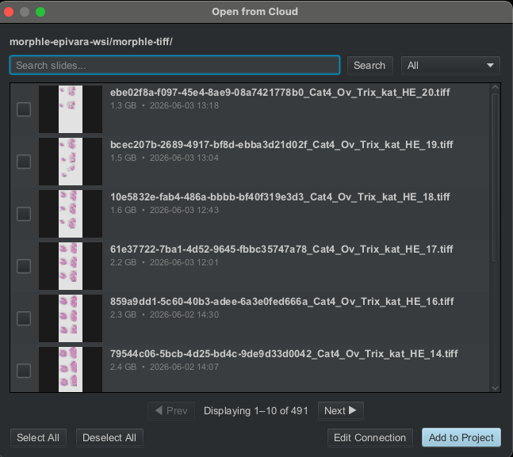
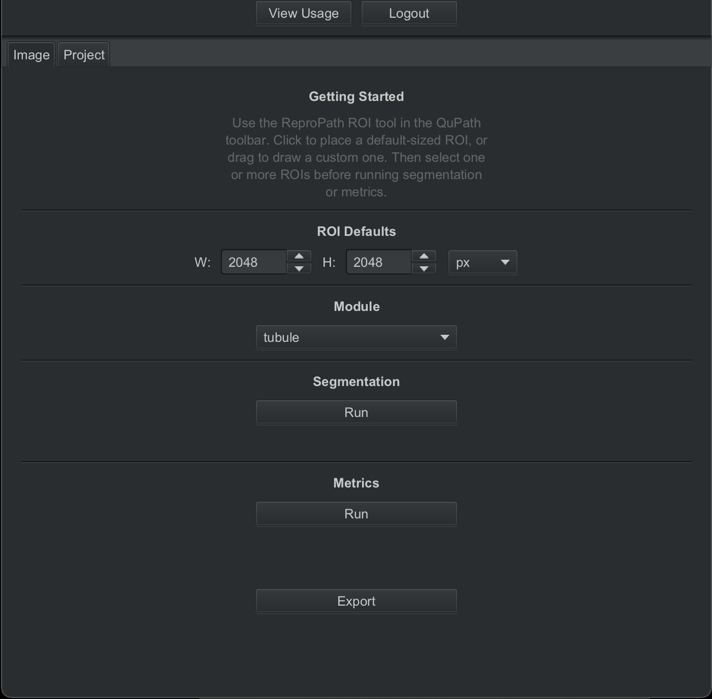
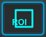
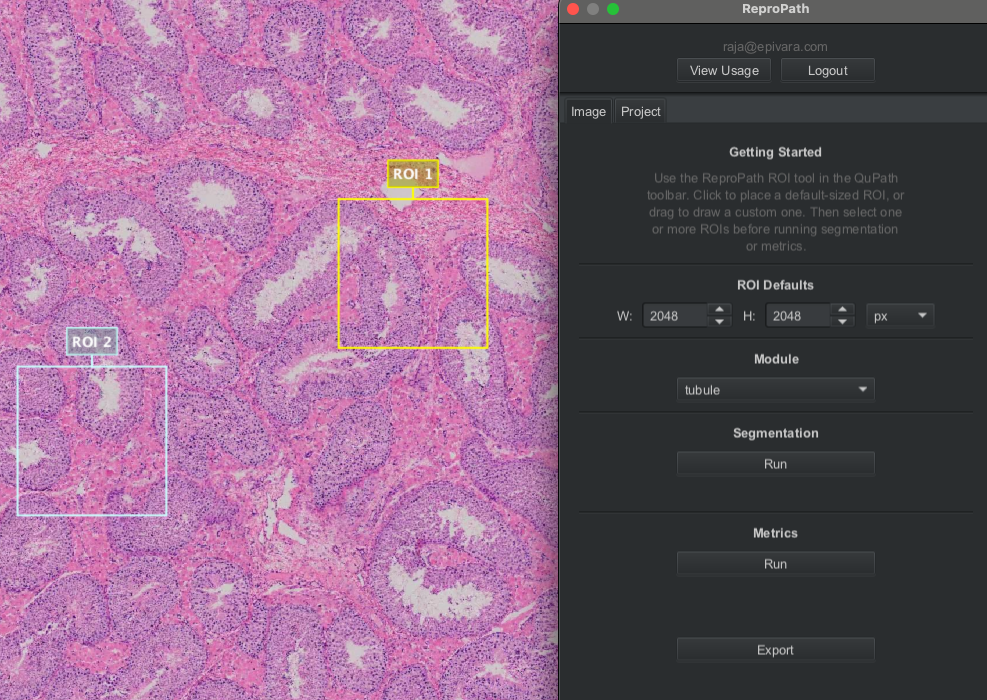
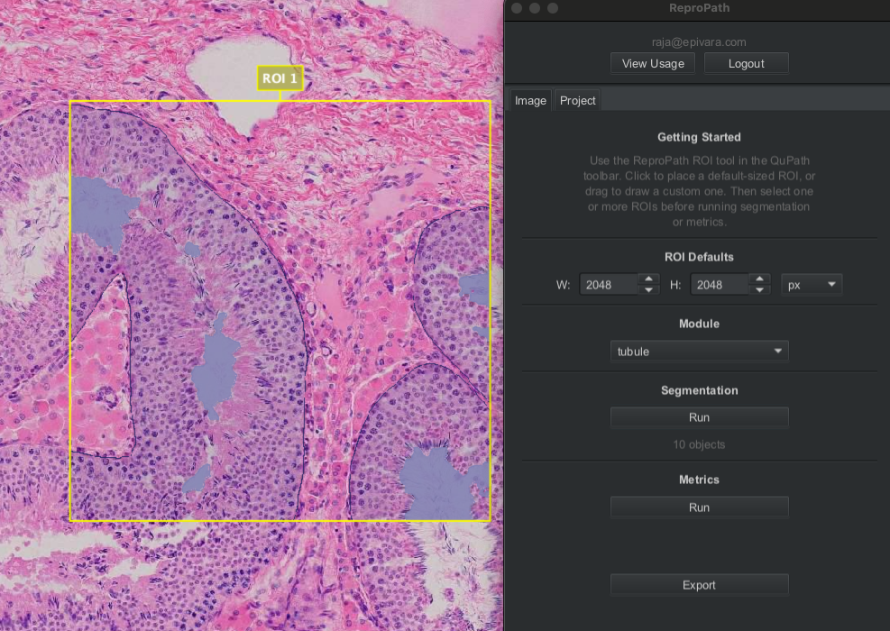
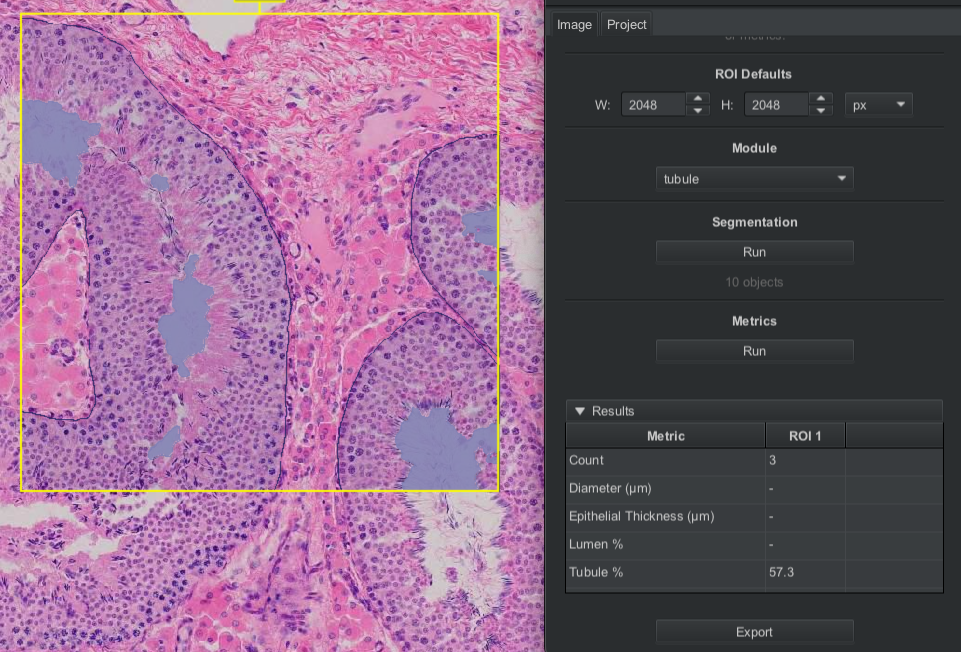
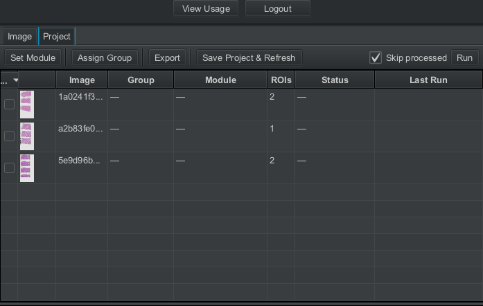
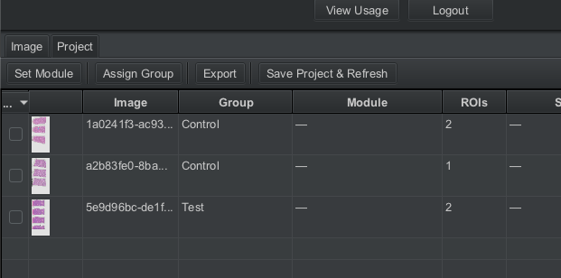
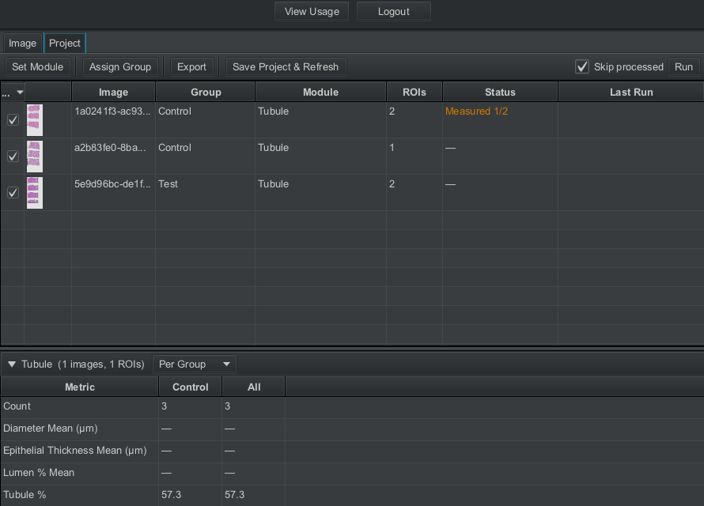
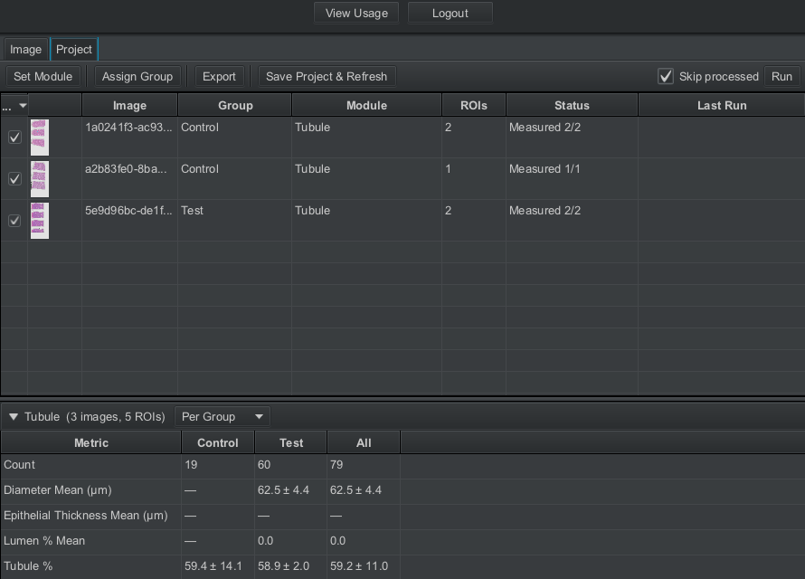

Usage (Tutorial)
Making a project
A project is a collection of slide images with data saved for each slide. For any real work, you'll want to create a project to save any annotations that are made. This is important if you want to revisit the work or keep a record.
Create a project by navigating to the left sidebar. Have the Project tab open, and press Create project... to bring up a prompt. Select any empty folder or create a new one, and press Open. This will not actually create a project until you add an image, so let's add one.
Local:
In the Project tab, press Add images... to open a prompt. QuPath will ask you to select
images on your computer to add to the project.
Cloud:
In the menu bar, navigate to Extensions → ReproPath → Open from Cloud.
If you've correctly set up the connection, you should see a list of slides.

Search for any slide you want, select one or more slides, and press Add to Project.
Note: QuPath allows you to add the same image to a project multiple times. Each duplicate will store its own data, so be cautious of adding duplicates unless intentional.
Once you've created a project, there is no need to save the project; QuPath updates the project automatically, you only need to save changes to images.
To revisit a project: inside the Project tab, press Open project..., navigate to the
folder where you saved your project, and open the project.qpproj file.
The extension menu
Open the ReproPath menu by navigating to the menu bar and selecting Extensions → ReproPath → Open ReproPath.

There are two tabs, the Image tab and the Project tab. The Image tab is used to work on a specific image. The Project tab allows you to run multi-image workflows. For now, we'll work with the Image tab.
Under ROI Defaults, you can change the size of the default ROI (region of interest) placed down when you click with the ReproPath ROI tool.
Under Module, you can select which module you want to run on your selected ROIs.
Segmentation will run model predictions on your selected ROIs, displaying generated annotations in the viewer once complete.
Metrics will compute module-specific metrics using the annotations in your selected ROIs. Once complete, they will be displayed in a table within the ReproPath menu and saved internally for later export. Note that metrics can only be saved for one module at a time.
Pressing Export will export any computed metrics to an Excel file for further analysis.
Running a module
In the tool bar, select the ReproPath ROI tool

.With the tool active, click anywhere in the viewer to place a default-sized ROI, or hold and drag to place a custom-sized ROI.
Select an ROI by double-clicking it, or Ctrl+Click (Cmd+Click on Mac) to select multiple ROIs.
A selected object will be yellow with default QuPath settings.

With one or more ROIs selected, let's try segmenting.
In the ReproPath menu, have a module selected under Module, and press Run under the Segmentation section. After waiting for a bit, segmentations will be returned to the viewer. Different modules take different times to process.

QuPath stores annotations in two different forms: as annotations or detections.
Annotations are editable, user-made objects. Detections are usually created automatically, and are space-efficient. They are optimized for many to exist, and as such are uneditable.
Segmentation results are returned as detections
You are given the optional opportunity to edit any segmentations if desired. To do so, select one or more detection objects, right click, and press Convert to Annotation (for editing).
The recommended way to edit annotations is to:
- Delete erroneous objects.
- Change object classes by selecting an object, right clicking, then choosing a class under Set classification.
- Use the Brush tool to adjust the mask of a selected annotation.
- Use the Polygon or Brush tools to create new objects.
If the annotations are to your liking, select one or more ROIs with annotations, and press Metrics → Run in the ReproPath menu to compute metrics.

When finished, a table will be displayed with computed metrics. For understanding what each metric means and when it is computed, consult the glossary.
Running a project workflow
For actual use, the Project tab in the ReproPath menu is probably more useful.
To start, create ROIs across multiple slide images. Open each slide image in the viewer create ROIs, and make sure results are saved.
In the Project tab, press Save Project & Refresh to update the display. If you've correctly created ROIs, it should look something like this:

In this menu, you'll find every slide image in your project listed with processing info.
Select the slide images you want to operate on.
Before you run processing, you may want to group images first. To do this, select images, then press Assign Group to set a group name.
This allows you to separate groups for metrics computation. A grouped project would look something like this:

Now, to run, first select images and press Set Module. The active module for each image updates the Status.

By adjusting the set module, you can check on metrics computation status for each image.
Now that a module is set for each image, press Run to process all selected images and ROIs. This may take a while! The status column and loading bar update with progress.

Once finished, the metrics table will be updated with your results!
In the metrics table, access the "Per ..." dropdown to change the granularity of the computed metrics. You can see metrics at the group, image, and ROI levels.
Saving Results
Qupath allows easily saving your ROIs as images with or without the annotations.
To do so, select an ROI, then in the menu bar, choose File → Export images, then choose Original pixels to save the actual image, or Rendered RGB (with overlays) to export the image with annotations overlaid.
To save metrics results, use the Export button in the ReproPath menu. In the Image tab, the export button will export results only for the current image. Exporting from the Project tab will export recorded metrics for all ROIs across the project.
Exported metrics will be saved to an Excel file to the location you choose.